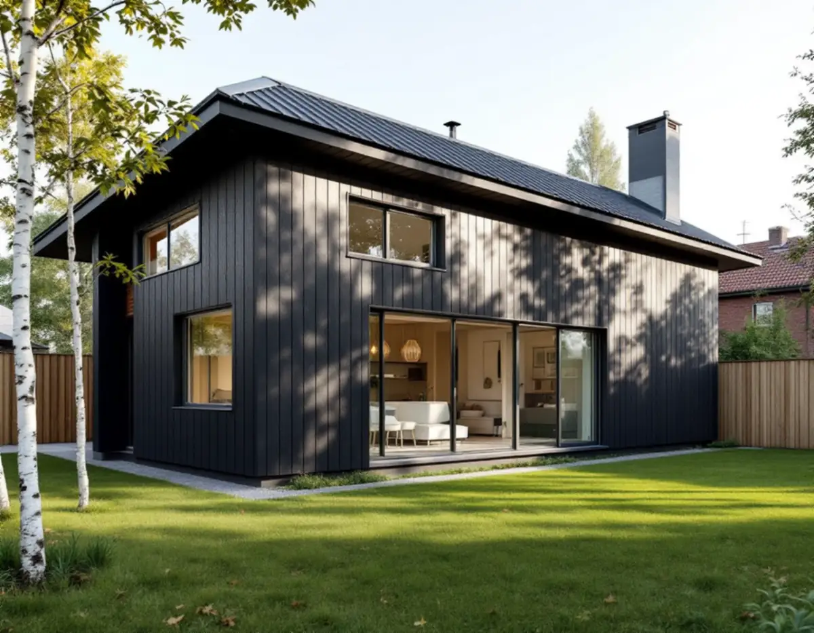
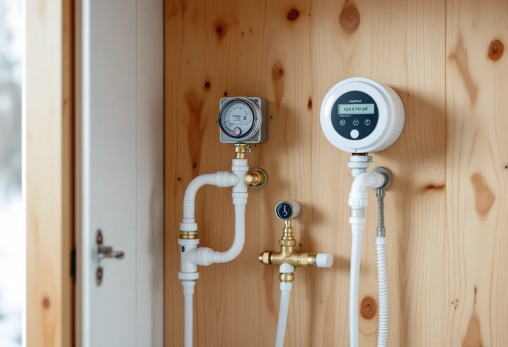

Kartkoll
Alla kartlager, detaljplan och eventuellt gestaltningsprogram för tomten.

Botkyrka kommun har en konkret vägledning för den som vill bygga ett komplementbostadshus: vilka lager i webbkartan du ska tända, vilka ritningar anmälan ska ha och hur vattnet ska dras.
Beskriv jobbet kort.
Något blev fel. Kontrollera uppgifterna eller ring 08 12 410 276.
Vi tittar på jobbet på plats innan du får offert.
Du ser vad som ingår och vad det kostar.
Vi drar av ROT direkt och sköter ansökan.
Geal Entreprenad AB, Bromma. Org.nr 559303-7566.
Geal Entreprenad AB bygger attefallshus nyckelfärdigt och följer den ordningen från första kartkollen till slutbeskedet.
Ett komplementbostadshus är enligt kommunen en fristående byggnad som kompletterar ett en- eller tvåbostadshus och är inredd med en självständig bostad. Det kan användas som fritidshus eller permanentbostad. Lovfritt blir det bara om måtten håller och ingen utökad lovplikt gäller. För att se det hänvisar kommunen till webbkartan: under den blå fliken Bibliotek och kultur finns lagret Kulturmiljöprogram, under Bygga och bo lagret Detaljplaner och under Riksintressen lagren Kulturmiljövård, Totalförsvaret och MSB, Försvarsmaktens civila del.
Kommunen skriver också att översiktsplanen kan visa vilka områden och byggnader som är särskilt värdefulla, att detaljplanen ska granskas för skyddsbestämmelser och att det bör kontrolleras om området har ett gestaltningsprogram. Vi går igenom alla lagren för din fastighet vid platsbesöket och skriver ner vad vi har sett, så att du har det samlat inför valet av plats och storlek på huset.

För ett lovfritt komplementbostadshus räknar kommunen upp när den utökade lovplikten slår till: inom 30 meter från ett järnvägsspårs mitt utan medgivande från huvudmannen eller infrastrukturförvaltaren, närmare en gräns än 4,5 meter utan grannarnas medgivande, inom eller i anslutning till totalförsvarets flygplatser, övningsfält eller skjutfält och vid eller inom särskilt värdefulla byggnader, tomter och bebyggelseområden.
Andra lagar kan också gälla. Kommunen nämner strandskyddsdispens inom strandskyddat område och särskilt tillstånd för åtgärder nära allmän väg utanför detaljplanelagt område. Även ett lovfritt hus ska uppfylla kraven i plan- och bygglagen, plan- och byggförordningen och Boverkets föreskrifter, påpekar kommunen. Vill du ha ett formellt och bindande beslut kan du söka frivilligt bygglov och startbesked. Syftet kan vara att skapa trygghet och minska risken för att huset ifrågasätts senare, men prövningen kostar en bygglovsavgift.
Kommunen påminner om att det oftast krävs en anmälan för tekniska installationer som ventilation, eldstad, vatten eller avlopp, även om byggnaden i sig kan vara lovfri. På kommunens sida om anmälan av komplementbostadshus finns en checklista för handlingarna, och där beskrivs tekniskt samråd, startbesked innan bygget och slutbesked innan huset används. Ritningarna ska vara fackmannamässiga, skalenliga och högst i A3. Situationsplanen i skala 1:400 ska måttsätta huset med minst två avstånd i rät vinkel till tomtgränser och visa alla byggnader på tomten. Ligger huset närmare grannens gräns än 4,5 meter ska grannen skriva under på situationsplanen, och alla delägare till grannfastigheten måste godkänna.
Fasadritningen i 1:100 ska visa alla fasader med nya och befintliga marknivåer, material och kulörer. Planritningen ska ha möblerat entréplan som är tillgängligt för personer med nedsatt rörelseförmåga, och sektionen ska visa våningshöjd, golvnivåer, takvinkel och marknivå vid entréerna. Till det kommer konstruktionsritning och kontrollplan. Kommunen skriver att utstakning och lägeskontroll kan krävas.
Får huset kök, pentry eller toalett räknas det som en egen bostad ur VA-synpunkt, och då tillkommer en anslutningsavgift enligt VA-taxan. För att dra in vatten och avlopp skickar du en servisanmälan till kommunens VA-enhet. Vattenledningen ska dras efter den befintliga vattenmätaren i huset, och den nya spillvattenledningen kopplas på den befintliga inom tomten. Görs det inte så monterar VA-enheten en egen mätare i attefallshuset.
Dag- och dräneringsvatten får inte kopplas till spillvattenledningen. Ska en befintlig komplementbyggnad byggas om eller få ändrad användning ska du kontakta VA-enheten. Om villornas tak och plåt i kommunen kan du läsa under takrenovering i Botkyrka och plåtslagare i Botkyrka. Lagens mått finns i reglerna för attefallshus.
Alla kartlager, detaljplan och eventuellt gestaltningsprogram för tomten.
Placering, avstånd i rät vinkel och befintliga byggnader mäts in.
Situationsplan, fasader, plan, sektion, konstruktion och kontrollplan.
Installationerna anmäls och vi väntar på startbesked innan de görs.
Grund, stomme, tak och installationer fram till nyckelfärdigt.
Huset används när slutbeskedet har kommit.
Skatteverket räknar upp arbeten som inte ger rotavdrag på ett småhus, bland annat att bygga ett helt nytt hus, en friggebod, ett garage eller en liknande fristående byggnad, och att skriva bygglovshandlingar eller anlita en arkitekt. Ett komplementbostadshus är en ny fristående byggnad, så kostnadsförslaget räknas utan avdrag.
Husets storlek och planlösning, kök och badrum, grunden, ledningsdragningen fram till befintlig mätare och spillvattenledning och om utstakning behövs. Efter ett gratis platsbesök får du ett skriftligt kostnadsförslag.
Komplementbostadshus på tomten.
Attefallshus →Takbyte, takbesiktning och plåtarbeten.
Takläggare i Botkyrka →Tullinge, Uttran och Tumba.
Takrenovering i Botkyrka →Flytt av badrum, stammar och frånluft.
Badrumsrenovering i Botkyrka →Nytt hus, utfart och byggarbetsplats.
Byggföretag i Botkyrka →Tullinges villor och kulörbytet.
Fasadmålning i Botkyrka →Tegel, trä och puts från efterkrigstiden.
Fasadrenovering i Botkyrka →Fönstertyper per epok i Botkyrkas villor.
Fönsterbyte i Botkyrka →Radhusen i Tuna.
Fönsterrenovering i Botkyrka →Kataloghus, källargolv och trägolv.
Golvläggare i Botkyrka →Furugolv och parkett i villorna.
Golvslipning i Botkyrka →Kök i villor och radhus, för att bo kvar.
Köksrenovering i Botkyrka →Tidstypiska kulörer från 1960-tal till gamla byar.
Målare i Botkyrka →Rännor, stuprör och plåttak i Botkyrka.
Plåtslagare i Botkyrka →Altan, plank och förråd i villaområdena vid järnvägen.
Snickare i Botkyrka →Material, solpaneler och takkupor.
Takbyte i Botkyrka →Ny tapet på träfiberskivor och gamla lager.
Tapetsering i Botkyrka →Villorna i Tullinge, Uttran och kartan.
Tillbyggnad i Botkyrka →Tullingehuset i omgångar.
Totalrenovering i Botkyrka →Eller ring 08 12 410 276, mån–fre 08–17.
Beskriv jobbet kort.
Något blev fel. Kontrollera uppgifterna eller ring 08 12 410 276.